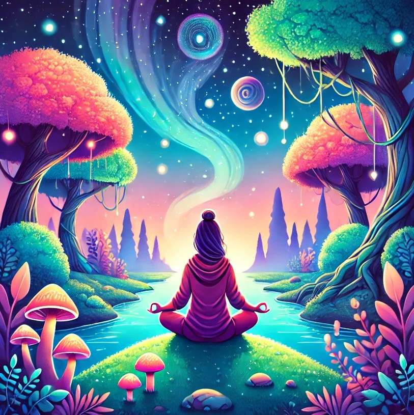

Er erschafft Welten – voller Dunkelheit, Magie und Spannung.
Seine Bücher entführen die Leser in eine Welt voller Licht, Schatten und einer Persönlichkeit, die echt aus sich heraus wächst, in schweren Widrigkeiten.
Diese Bücher haben einen Charakter, den du so noch nie erlebt hast. Also tauche ein, in die Welt von Arik und den Kraftsteinen.
Neben meiner derzeitigen Tätigkeit widme ich mich mit großer Sorgfalt dem Lektorat von Texten. Wenn Sie Interesse an einer Zusammenarbeit haben, freue ich mich über eine Nachricht.
Sie schreibt Worte wie fließendes Licht – achtsam, heilend, intuitiv.
Ihre Texte sind Einladungen in innere Welten. Ob geführte Traumreisen oder Einschlafgeschichten – sie verbinden Tiefe mit Leichtigkeit, Spiritualität mit Sprache, Magie mit Menschlichkeit.
Bei den Büchern für die Kinder übernimmt ihr Hund die Hauptrolle und verzaubert damit nicht nur die kleinen Leser!
Unsere Welt ist voller Wunder, verborgen hinter dem Schleier des Alltäglichen. Sie ist magisch und durchzogen von zauberhaften Energien, die weit über das hinausgehen, was unser bloßes Auge sehen oder unsere bekannten Sinne erfassen können. Die Wissenschaft beginnt langsam zu begreifen, was viele Menschen schon lange spüren: Alles ist Energie. Und wenn wir lernen, diese bewusst zu lenken, können wir unser Leben und unsere Umgebung positiv beeinflussen.
Wir leben in einer Zeit des Erwachens – der Moment ist gekommen, aus der Dunkelheit herauszutreten und das Licht in uns anzuerkennen. In jedem von uns schlummert eine unermessliche Kraft, die darauf wartet, entfesselt zu werden.
Mit dieser Seite möchte ich dazu inspirieren, neue Wege zu entdecken, Horizonte zu erweitern und das eigene Potenzial zu entfalten. Es gibt so vieles, was möglich ist – wenn wir uns öffnen und den Mut haben, unserer inneren Wahrheit zu folgen.
Wie Kerry K. so treffend sagt: Die Welle der Veränderung ist längst ins Rollen gekommen. Jeder einzelne von uns, der sein Bewusstsein hebt, inspiriert andere dazu, es ihm gleichzutun. Ein Funke reicht aus, um ein ganzes Feuer der Transformation zu entfachen.
Nun lass uns gemeinsam Wunder bewirken und neue Wege gehen. Ich danke dir von Herzen, dass du den Weg hierher gefunden hast.
Von Herzen, Lilian
